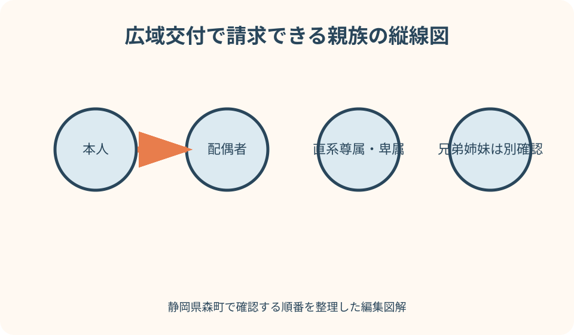
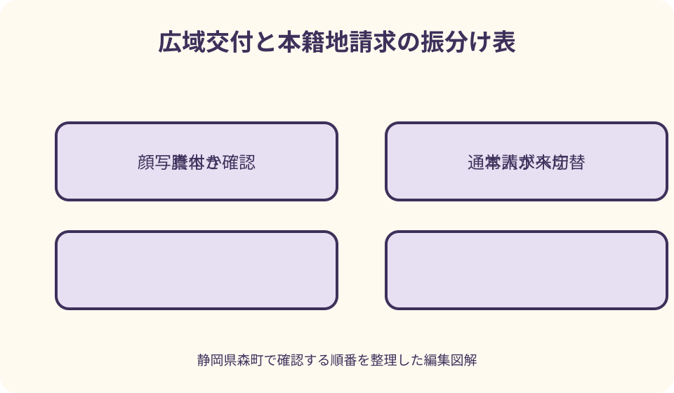

行政手続・証明書｜最終確認 2026-08-10
静岡県森町の戸籍証明書広域交付｜取れる戸籍と請求条件を確認
戸籍証明書の広域交付により、本籍地が森町でなくても、一定の戸籍謄本を森町役場の窓口で請求できるようになりました。ただし、誰の戸籍でも取れる制度ではなく、代理人・郵送・第三者請求には使えません。戸籍抄本や戸籍の附票も対象外です。森町公式と法務省の案内を基に、窓口へ行く前の判定、相続戸籍の頼み方、広域交付が使えないときの代案を具体化します。

編集イラスト広域交付は本籍地以外の窓口で戸籍謄本を取る仕組み
戸籍証明書の広域交付は、2024年3月1日から始まった仕組みです。本籍地が遠方でも、請求者にとって最寄りの市区町村窓口で対象となる戸籍証明書を請求できます。森町に住み、本籍が県外にある人も、条件を満たせば森町役場を入口にできます。
法務省は、複数の本籍地に分かれた戸籍を一か所の窓口でまとめて請求できる点を案内しています。親が転籍や婚姻を重ね、出生から死亡までの戸籍が複数自治体にある相続では、各地へ個別に郵送する前に検討できる方法です。
ただし「全国の戸籍が自由に取れる」という意味ではありません。請求できる人、証明書の種類、本人確認、請求方法に強い制限があります。森町公式も、この制限に注意するよう専用ページで明記しています。
まずは、誰の何という証明が必要かを提出先へ聞きます。「戸籍一式」「相続用」だけでは、広域交付の対象か判定できません。対象者、必要期間、全部事項か個人事項か、附票の要否を一行ずつ分けることが出発点です。
請求できる人を家系図の縦線で判定する
森町公式が広域交付の請求者として示すのは、対象戸籍に記載されている本人、その配偶者、父母・祖父母などの直系尊属、子・孫などの直系卑属です。家系図で自分から上へ伸びる線と下へ伸びる線、そして配偶者を色分けすると判断しやすくなります。
父母の戸籍を子が請求する、祖父母の戸籍を孫が請求する、子の戸籍を親が請求するといった縦の関係は対象候補です。ただし、窓口で関係を確認できることが必要です。本籍や氏の変遷が複雑なら、分かる範囲の戸籍資料を持参するか事前相談します。
兄弟姉妹は横の関係です。森町公式は、父母の戸籍から除籍した兄弟姉妹の戸籍謄本等を広域交付で請求できないと明記しています。兄の現在戸籍を妹が委任状で取る、といった使い方は広域交付には当てはまりません。
相続人だから必ず広域交付で取れるわけでもありません。亡くなった人が兄弟姉妹、おじ・おばなど直系ではない場合、通常の第三者請求として正当な理由と資料を示す方法を検討します。請求権の有無を家族の順位だけで断定せず、森町または本籍地へ相談します。
対象は謄本であり抄本や附票ではない
森町の広域交付ページが対象として挙げるのは、戸籍全部事項証明書、除籍全部事項証明書、改製原戸籍謄本です。いずれも戸籍に記録された人のうち一人だけを抜き出す抄本ではなく、全部を証明する形が基本です。
戸籍個人事項証明書、いわゆる戸籍抄本が必要なら、広域交付の対象外です。提出先が「本人だけの戸籍」と指定しているのに、広域交付で謄本を取ればよいと自己判断せず、本籍地窓口への通常請求や利用可能な別の交付方法を確認します。
戸籍の附票も広域交付の対象ではありません。附票は住所の履歴を確認する書類で、親族関係を証明する戸籍謄本とは役割が違います。不動産登記で過去住所とのつながりが必要な場合などは、提出先が求める証明名を正確に聞いてください。
身分証明書、独身証明書、戸籍届受理証明書、戸籍記載事項証明書も、森町の広域交付対象一覧には含まれていません。婚姻や資格申請のためにこれらが必要なら、本籍地や届出地への請求方法を別に調べます。

コンピュータ化されていない戸籍は対象外
森町公式は、紙戸籍などコンピュータ化されていない戸籍を広域交付では発行できないと案内しています。古い戸籍であっても全て対象外という意味ではなく、改製原戸籍謄本として取得できるものと、システムで扱えないものを窓口が判定します。
家に残る古い戸籍の画像を見て、これは紙だから取れないと自分で決める必要はありません。対象者の氏名、生年月日、本籍地、筆頭者、必要な期間を伝え、広域交付で検索・交付できる範囲を確認します。
古い戸籍だけ本籍地への請求になる場合、広域交付で取れた分と重複しないよう、どの本籍・どの期間まで交付されたかをメモします。「出生から死亡まで」という目的だけを繰り返すより、欠けている時期と戸籍の表示を本籍地へ伝える方が明確です。
システム障害や本籍地側の確認により、その場で交付できない可能性も想定します。広域交付は全国の戸籍情報を連携して扱うため、役場へ行けば必ず短時間で全通そろうと保証できません。提出期限から逆算して余裕を持ちます。
顔写真付き本人確認書類を必ず持参する
広域交付では、請求者本人が窓口へ来て、顔写真付き本人確認書類を提示する必要があります。森町公式は、マイナンバーカード、運転免許証、パスポートなどを例示しています。通常の戸籍請求で使える書類の組合せを、そのまま広域交付へ当てはめないでください。
健康保険の資格確認書や年金関係書類など顔写真のない書類を二種類そろえても、広域交付の本人確認条件を満たすとは限りません。顔写真付き資料がない場合は、取得を急ぐ事情を伝え、本籍地への通常請求など別ルートを相談します。
本人確認書類の有効期限、現在の氏名、写真で本人を確認できる状態も見ます。結婚や離婚直後で戸籍上の氏と身分証明書の氏が異なる場合は、どの資料を追加すべきかを窓口へ確認します。カードへ自分で追記しないでください。
マイナンバーカードを使う場合、個人番号の写しを提出する手続だと考える必要はありません。窓口での本人確認にカードを提示します。暗証番号が必要か、コピーを取るかなど個別の扱いは、受付時の説明に従います。
代理・郵送・第三者請求には広域交付を使えない
森町公式は、広域交付について委任状による代理請求ができないと明記しています。高齢の親が子に委任状を書き、子が親自身の戸籍を広域交付で取る方法は使えません。ただし子が自分の直系尊属として請求できる範囲なら、子自身の請求権で相談します。
郵送請求も広域交付の対象外です。森町役場へ広域交付用として申請書と本人確認書類を郵送しても、全国の戸籍をまとめて返送してもらう仕組みではありません。郵送を希望する場合は、通常は本籍地ごとの郵送請求を検討します。
弁護士、司法書士、行政書士などが職務上または代理人として請求する場合も、本人向けの広域交付とは別の請求です。専門家へ依頼する予定なら、誰がどの根拠でどの自治体へ請求するかを確認し、本人が広域交付で重複取得しないようにします。
相続人ではない知人、近所の人、施設職員が、本人の代わりに広域交付を使うこともできません。本人の移動が難しい場合は、通常請求の代理・郵送条件を本籍地へ確認します。制度の便利さより、戸籍情報を厳格に守る本人確認が優先されます。
相続用は出生から死亡までの範囲を言葉にする
親の相続で必要になる戸籍は、現在の戸籍一通だけとは限りません。銀行、法務局、年金など提出先へ、死亡の記載がある戸籍だけか、出生から死亡まで連続した戸籍か、相続人との関係が分かる部分かを確認します。
窓口では「亡父について出生から死亡までの連続した戸籍が必要」のように目的と範囲を伝えます。本籍地を全て覚えていなくても、分かる最後の本籍、筆頭者、氏名、生年月日、死亡日を整理すると調査の手掛かりになります。
交付された戸籍は、古いものから新しいものへ並べ、次の戸籍へ移った記載を追います。枚数が多いときは、交付された自治体名、戸籍の表示、編製・除籍の日を表に転記します。読み方に迷えば、相続関係を自己流で確定せず専門家へ相談します。
一部の古い戸籍が広域交付で出なかった場合は、欠けた本籍地へ通常の郵送請求をします。森町の郵送請求案内は、本籍の表示、筆頭者、対象者、必要な種類・通数などを必要事項として示しています。広域交付で取得済みの範囲を添えて重複を避けます。
兄弟姉妹の相続は通常請求への切替を考える
亡くなった兄弟姉妹の相続人として戸籍を集める場合、自分と亡くなった人が兄弟だからという理由だけで、その人の現在戸籍を広域交付で請求できるとは限りません。森町公式は、父母の戸籍から除籍した兄弟姉妹の戸籍を対象外としています。
この場合でも、戸籍を一切請求できないという結論ではありません。森町の通常の戸籍請求ページは、自己の権利行使や義務履行のため必要な人について、原因、内容、戸籍確認が必要な理由を示す第三者請求の考え方を案内しています。
通常請求では、相続関係と請求理由を明らかにする資料を求められる場合があります。本籍地が複数なら各自治体へ確認が必要です。委任状があれば済むのか、相続人であることを示す戸籍が要るのかを一律に決めず、最初の本籍地へ相談します。
専門家へ依頼する場合は、戸籍収集だけを頼むのか、相続人調査や登記まで含むのかを区別します。広域交付で自分が取れる直系分だけ先に集めるかも相談し、同じ戸籍を双方が請求する費用と時間を減らします。
窓口で長く待つ可能性を予定へ入れる
広域交付で複数自治体の戸籍をさかのぼる場合、現在戸籍一通の請求より確認に時間がかかる可能性があります。森町公式ページは標準待ち時間を保証していません。朝に行けば必ず昼までに終わる、といった予定は立てない方が安全です。
提出期限が迫っているなら、来庁前に住民生活課住民係へ、対象者、必要範囲、戸籍の概数、当日交付の見込みを尋ねます。電話で交付を確約してもらうのではなく、受付可能時間や後日受取の可能性を確認する目的です。
森町には水曜日の時間外窓口案内がありますが、「戸籍謄本等の交付」という表示だけで広域交付の全件が扱えると判断しないでください。本籍地照会や複数戸籍の確認が必要な請求は対応条件が違う可能性があるため、広域交付と明示して事前確認します。
役場の後に銀行や法務局を予約するなら、同日提出を前提にしません。戸籍が欠けた場合の追加請求、コピー、相続関係図の確認に時間が必要です。交付日と提出日を分けておくと、窓口で焦って必要範囲を狭める失敗を防げます。
良い点
広域交付の良い点は、本籍地が県外や遠方でも、森町の窓口を入口にできることです。本籍を移すたびに各自治体へ定額小為替と返信用封筒を送る手間を減らし、直系親族の連続戸籍を一か所で相談できます。
相続戸籍をまとめて請求する際、窓口職員へ必要範囲を言葉で伝えられる点も利点です。郵送書類の「出生から死亡まで」という記載だけでは伝わりにくい事情を補足し、どの年代が広域交付対象外かをその場で確認できます。
顔写真付き本人確認と本人出頭を求める仕組みは、利便性と戸籍情報の保護を両立させるための重要な条件です。代理人が委任状だけで全国の戸籍を集められないため、本人や直系親族の情報が不必要に広がるのを抑えます。
広域交付の対象外を理解すると、通常請求との使い分けも明確になります。謄本は広域交付、附票や抄本は本籍地請求、兄弟姉妹は請求理由を示す通常請求というように分ければ、対象外の申請を何度も出す手戻りを減らせます。
注文したい点
森町の専用ページは対象証明と請求者を簡潔に示していますが、相続で出生から死亡まで頼むときの伝え方、交付までの時間、後日受取の可能性までは詳しく書かれていません。複数戸籍を頼む人は、来庁前の電話確認が必要です。
「最寄りの窓口でまとめて」という制度紹介は便利に見える一方、戸籍抄本、附票、受理証明、紙戸籍が対象外であることを見落としやすくします。提出先の書類名を先に確定しないと、一部だけ取得して再度本籍地へ請求することになります。
通常の戸籍請求では代理や郵送ができる場面があるため、その説明を読んだ人が広域交付にも委任状を使えると誤解しやすい点にも注意が必要です。同じ「戸籍謄本の請求」でも、広域交付か本籍地請求かで本人確認条件が違います。
森町の時間外窓口が戸籍謄本等を扱うという案内も、広域交付を含むかを明確に読み取れない場合があります。仕事後に遠方から向かう人ほど、受付終了直前に判断を求めず、広域交付の対象と必要通数を事前に伝えて確認したいところです。

広域交付が使えないときの本籍地郵送請求
広域交付が使えない場合の代表的な代案は、本籍地の市区町村への郵送請求です。森町本籍の戸籍について森町公式は、請求書、本人確認書類の写し、手数料、返信用封筒、必要に応じ関係資料や委任状を送る流れを案内しています。
他自治体本籍の戸籍は、その自治体の公式ページで請求書、手数料の納付方法、本人確認、返信先を確認します。森町の様式や金額を全国共通だと思わず、送付先ごとにチェックしてください。定額小為替の扱いも自治体の案内へ従います。
郵送では、平日日中に連絡のつく電話番号を記載します。本籍や筆頭者が誤っている、必要範囲が曖昧、手数料が不足していると、照会に時間がかかります。提出期限があるなら、速達の往路だけでなく自治体での確認日数と返送日数を見込みます。
代理人に頼む場合は、広域交付ではなく通常請求として委任状の可否を確認します。兄弟姉妹や第三者の請求では、委任だけでなく請求理由と関係資料が必要になることがあります。自分の立場を本籍地へ伝え、必要な原本・写しを確認します。
戸籍取得後は提出先ごとに束を分ける
広域交付で多くの戸籍を受け取ったら、いきなり全通を銀行へ提出せず、誰のどの期間かを確認します。現在戸籍、除籍、改製原戸籍を年代順に並べ、次の戸籍へ移った記載がつながっているかを見ます。
複数の提出先へ同じ原本を使いたい場合は、原本還付や法定相続情報一覧図の利用可否を各提出先へ確認します。コピーだけでよいか、発行からの期間指定があるかも異なります。必要通数を推測で増やす前に提出条件を聞きます。
戸籍には家族の出生、婚姻、死亡など慎重に扱う情報が含まれます。相続関係者全員へ写真を一斉送信せず、誰が原本を保管し、誰が閲覧し、いつ返却するかを決めます。不要になったコピーは適切に処分します。
読み取れない旧字や続柄があるときは、自分で関係図を確定せず、提出先や専門家へ確認します。戸籍の収集が完了したことと、相続人や持分が法的に確定したことは同じではありません。証明取得は判断材料を揃える段階です。
代案・結論
顔写真付き本人確認書類がない場合は、広域交付窓口へ別の二点を持って行けばよいと決めつけず、本籍地への通常請求を検討します。本人確認書類の種類、郵送先住所、関係資料を本籍地へ確認し、期限に間に合う方法を選びます。
本人が来庁できない場合は、委任状を使った広域交付ではなく、通常請求の代理または郵送が可能かを本籍地へ尋ねます。直系の家族が自分自身の請求権で窓口へ行く方法もあり得ますが、対象者との関係を示せるかを事前確認します。
必要書類が抄本、附票、身分証明、受理証明である場合は、広域交付をやめて本籍地・届出地の請求へ切り替えます。広域交付で似た名前の書類を取って代用するのではなく、提出先が指定した証明名を変えずに探します。
結論として、森町で広域交付を使う前に、請求者が本人・配偶者・直系か、必要書類が謄本か、顔写真付き本人確認書類があるか、本人が窓口へ行けるかを確認します。四つとも満たすときに森町住民係へ相談し、外れる項目は通常請求へ振り分けます。
大石の視点
大石の視点では、広域交付を「相続が全部終わる便利な制度」と見せないことが大切です。戸籍を集める工程は短くできても、遺産の内容、相続人の意思、境界、農地、建物管理などは別に確認が必要です。証明取得と相続判断を一つにしません。
森町で実家を承継する相談では、出生から死亡までの戸籍と、不動産登記の所有者・住所を結び付ける必要があります。戸籍に記載された本籍は住所でも不動産所在地でもありません。本籍の変遷を見て土地の場所を推測しないことが重要です。
山間部から役場へ行く人には、顔写真付き本人確認書類を忘れた一往復が大きな負担です。必要な人、必要期間、本籍・筆頭者、提出期限を一枚にし、広域交付で扱えるかを電話確認してから移動することが、最も現実的な時間短縮になります。
家族で役割を分けるなら、窓口へ行く人、取得範囲を確認する人、提出先を確認する人、原本を管理する人を決めます。広域交付は代理請求できないため、本人として請求する人を中心に情報を集め、他の家族は準備と整理を支える形が適しています。
森町役場へ行く前の最終チェック
第一に、対象者との関係を確認します。本人、配偶者、父母・祖父母、子・孫のどこに当たるかを簡単な家系図へ記します。兄弟姉妹や第三者なら、その場で広域交付を前提にせず通常請求の相談へ切り替えます。
第二に、必要な証明書を確認します。戸籍全部事項証明、除籍全部事項証明、改製原戸籍謄本なら対象候補です。抄本、附票、受理証明、独身証明など別の名称なら、本籍地または届出地の案内を開きます。
第三に、請求者本人の顔写真付き本人確認書類、有効期限、氏名表示を確認します。第四に、対象者の氏名、生年月日、分かる本籍、筆頭者、必要期間、提出先の期限を一枚へまとめます。複数戸籍なら交付時間に余裕を取ります。
この記事の確認日は2026年8月10日です。手数料、受付時間、システム稼働、対象証明の取扱いは変わり得ます。来庁当日は森町公式の広域交付ページを開き、件数が多い場合や時間外窓口を考える場合は住民生活課住民係へ先に確認してください。
公式情報・確認先
掲載内容は次の一次情報を基礎に整理しました。営業、料金、催し、交通は変わるため、出発前または手続き前にリンク先で最新情報を確認してください。
- 戸籍証明書等の広域交付（静岡県森町、2026-08-10確認）
- 戸籍謄本・戸籍抄本等の申請（静岡県森町、2026-08-10確認）
- 戸籍等の郵送請求（静岡県森町、2026-08-10確認）
- 水曜日時間外窓口業務について（静岡県森町、2026-08-10確認）
- 戸籍法の一部を改正する法律について（令和6年3月1日施行）（法務省、2026-08-10確認）